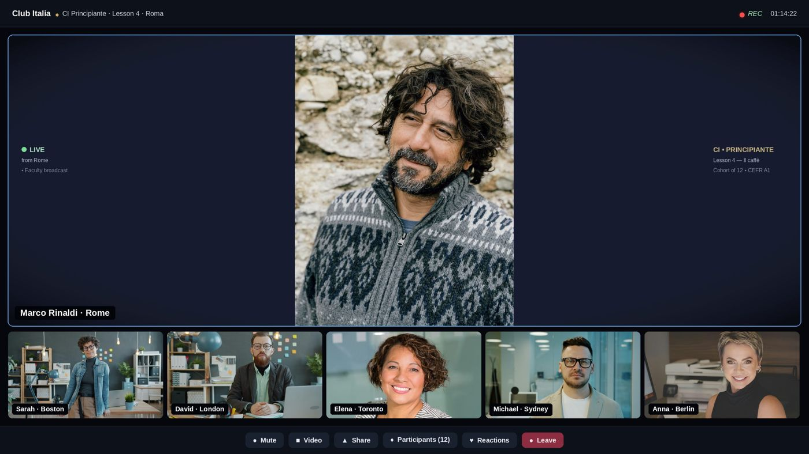

Learn Italian. Live from Italy.
Live classes with a native teacher in Italy. Ten to twelve learners in your class. Twenty lessons per course, built on the Common European Framework. A CEFR certificate at the end.
A serious school. Not an app.
Club Italia is the Italian faculty of eTeacher Group. Every lesson is live, every teacher is a native Italian, and every course sits on a defined rung of the Common European Framework of Reference for Languages.
You do not study Italian here. You use it: to order, to argue, to tell a story, to read a menu in Bologna and an inscription in Rome. Grammar is taught precisely, then put to work in the situations where Italians actually use it.

Six commitments, in every course.
Live from Italy
Your teacher broadcasts from Rome, Florence, Bologna, Milan, Venice, Naples or Palermo. You hear the Italian that lives there.
Small groups
Ten to twelve adult learners. You speak in every lesson, not once a term.
A defined syllabus
Twenty lessons per course, each with stated objectives, grammar, vocabulary and a cultural setting. Published in advance as a PDF.
Teacher-led, not self-serve
A qualified native teacher plans, teaches and corrects. Feedback is personal and immediate.
Practice between lessons
Biagio, the AI conversation tutor, is available at any hour to rehearse what you learned in class.
Measured progress
Can-do assessment at every milestone and a CEFR-mapped certificate at the end of each course.
Eleven courses. Three tracks. One ladder.
Every card shows the CEFR level, faculty, format, start date and tuition. Nothing hidden.
Il Corso · structured, A0 to A2.2

CI Principiante
Your first Italian, taught in Rome, the city where the language began.

CI Elementare
Everyday Italian from Florence, the city where the language was standardised.

CI Intermedio
Confident daily Italian from Bologna, la Dotta, la Grassa, la Rossa.

CI Avanzato
Real Italian for real life, between the warmth of Naples and the sharpness of Milan.
Parliamo · spoken, A0 to B1

Al Caffè
Twenty live conversation sessions set at Italian cafés.

A Tavola
Twenty live conversation sessions set at the Italian table.

In Viaggio
Twenty live conversation sessions for people who actually travel Italy, trains, hotels, museums, mountain refuges, sailing the Amalfi coast..

Chiacchierando
Twenty live conversation sessions on the four things Italians actually do all day: opinion, humour, disagreement and storytelling.
Capsule culturali · any level

La Cucina
Six live cultural sessions on the vocabulary and history of the Italian table, pasta, pane, vino, caffè, and the sacred rituals of the family meal..

L'Arte
Six live cultural sessions on the Italian language of art history, from Giotto to Caravaggio, with the vocabulary that lets you read a museum wall label in the Uffizi..

L'Opera
Six live cultural sessions on Verdi, Puccini and Rossini.
From «ciao» to full fluency.
The Council of Europe's Common European Framework defines six levels by what you can do. Our syllabus is written against those descriptors, rung by rung.
Breakthrough
Introduce yourself, order, ask the way. Present tense, articles, essere and avere.
Waystage
Narrate the past, make plans, handle travel and shops. Passato prossimo and imperfetto.
Threshold
Hold a conversation on familiar topics, give opinions, write a coherent letter. Futuro, condizionale, pronouns.
Vantage
Argue a point, follow the news, read contemporary fiction. Congiuntivo and complex syntax.
Effective
Use Italian flexibly for work and study. Register, idiom, academic writing.
Mastery
Understand virtually everything. Literary Italian, nuance, regional variety.
The current catalog covers A0 to B1. B2 to C2 follow the same framework and are taught in advanced cohorts. Read the full curriculum
The city is part of the syllabus.
Each unit is anchored in a real Italian place: a Roman bar, a Florentine workshop, a Bolognese market. Language is learned where it is lived.
Five steps to your certificate.
Placement
A short spoken conversation with a teacher places you on the right CEFR rung.
Enrol
Choose a course, a cohort and a schedule. Receive the syllabus PDF.
Live lessons
Twenty live lessons with your teacher and ten to twelve classmates.
Practise
Rehearse with Biagio and the recording library between lessons.
Certify
Can-do assessment and a CEFR-mapped certificate. Optional CILS or CELI preparation.
Prepared for CILS and CELI.
Italy's two major certifications of Italian as a foreign language are CILS, from the Università per Stranieri di Siena, and CELI, from the Università per Stranieri di Perugia. From A2 upward, our courses can include structured exam preparation for both.
You sit the exam at an authorised exam centre. We make sure you walk in ready.
Seven native teachers. Seven Italian cities.
Each teacher teaches from the city they live in, so a year with us is also a year of Italian accents, kitchens and streets.


Meet Biagio.
Practise Italian at any hour with an AI conversation tutor trained on the Club Italia syllabus. He speaks with a real Italian voice, corrects your grammar and explains why.
Biagio supports your teacher. He never replaces one. Included with every course.
Culture speaks Italian. So will you.
The questions we hear most.
Courses
How is this different from an app?
Club Italia is a live small group class with a native teacher broadcasting from Italy. You speak in every lesson, and a teacher hears and corrects you. Apps are a useful supplement. They are not a classroom.
I already speak some Italian. Where do I start?
Book a placement conversation. A teacher assesses your spoken and written Italian against the CEFR descriptors and places you on the correct rung, so you neither repeat nor drown.
How large are the groups?
Ten to twelve adult learners per class. Small enough that everyone speaks in every lesson.
What if I miss a class?
Every class is recorded and added to your library, with the teacher's notes.
Levels and certification
Which CEFR levels do you teach?
The current catalog runs from A0 to B1: four structured courses from A0 to A2.2 and a spoken track that reaches B1. The curriculum framework continues to C2, and advanced cohorts open on demand.
What certificate do I receive?
At the end of each course you receive a Club Italia certificate stating the CEFR level you have reached. It is a school certificate, not a state examination.
Do you prepare for CILS and CELI?
Yes. From A2 upward, lessons can include exam technique for the CILS (Università per Stranieri di Siena) and CELI (Università per Stranieri di Perugia) papers. You sit the exam itself at an authorised exam centre.
Can a certificate help with Italian citizenship?
Italian citizenship by naturalisation or marriage requires B1 Italian certified by a recognised body such as CILS or CELI. Our B1 path prepares you for that exam; the school certificate itself is not a substitute.
Your Italian begins with a conversation.
Fifteen minutes with a teacher is enough to place you and plan your start. Seven day full refund from your first live lesson.